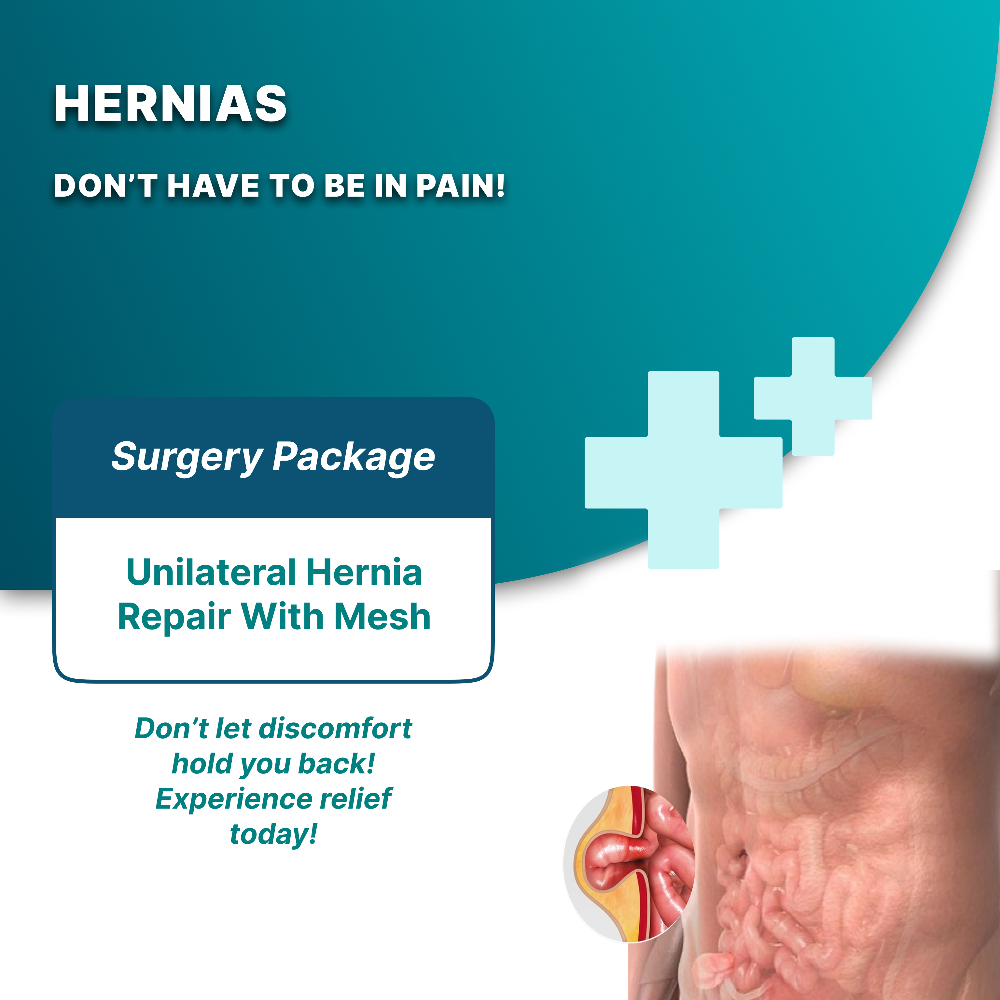
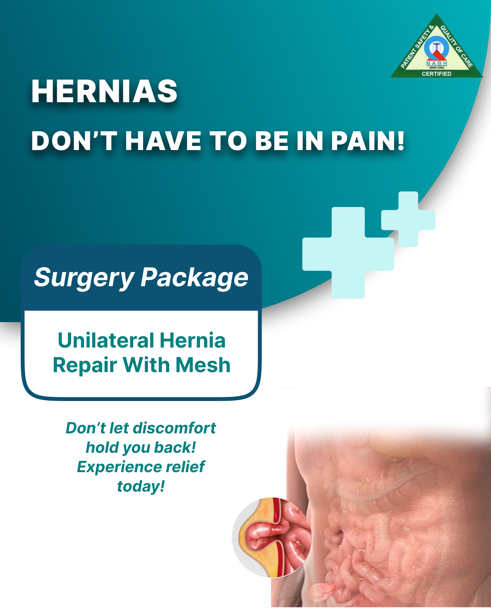
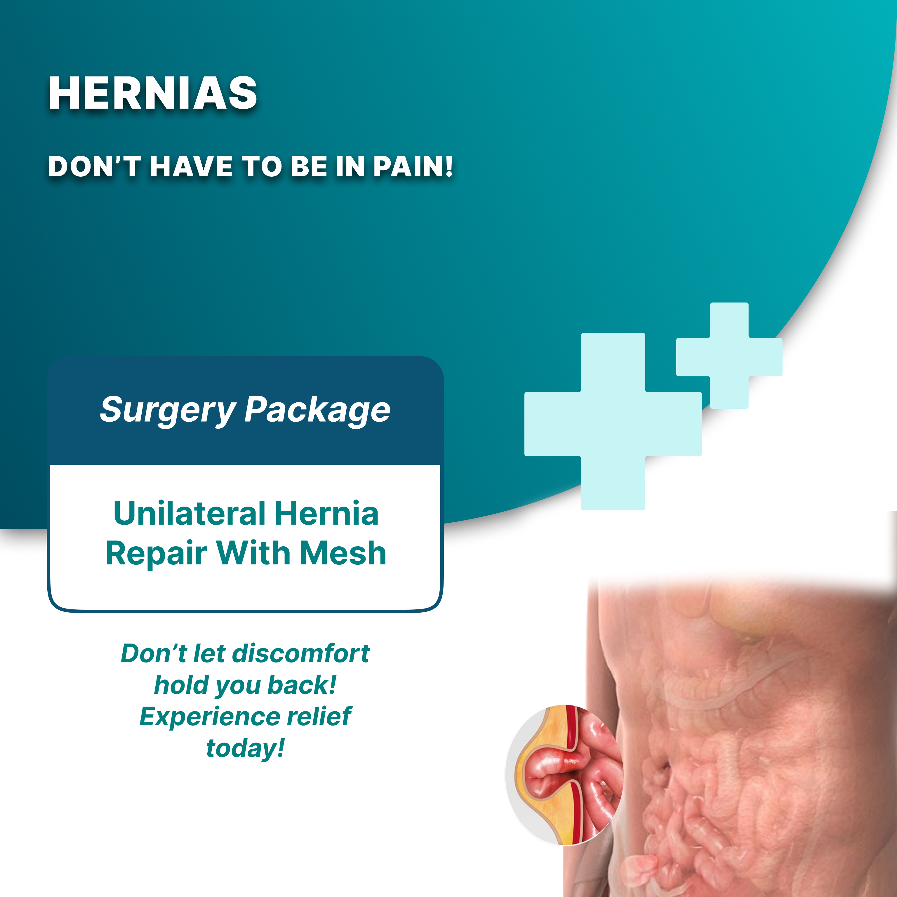
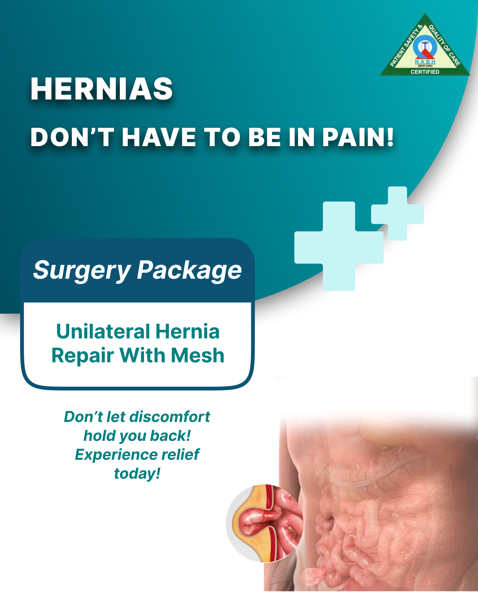
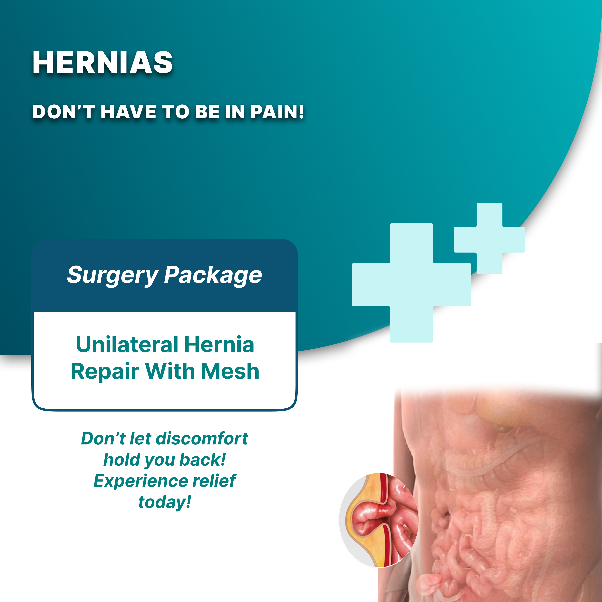
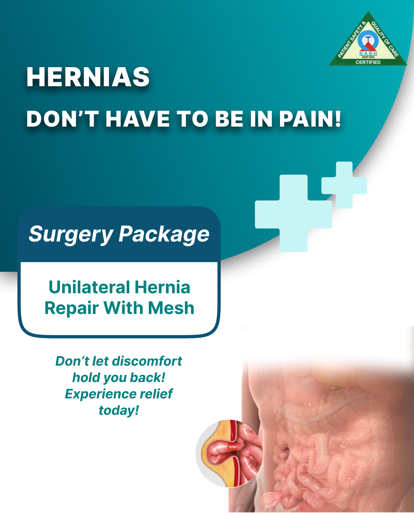
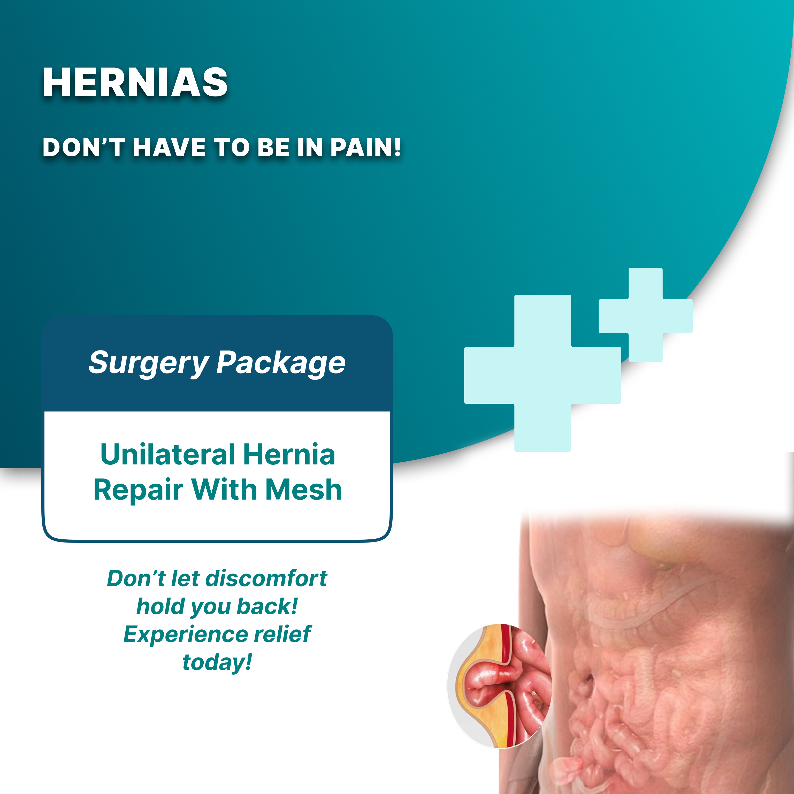
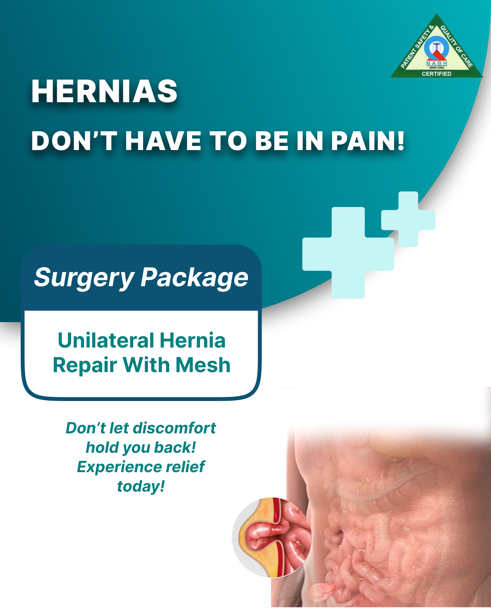

What is a Hernia?
A hernia occurs when an organ or tissue protrudes through a weak spot in the surrounding muscle or connective tissue. This can result in a noticeable bulge, often in the abdomen or groin area. Sometimes you can see the hernia, depending on its location and size.
Hernia Causes:
The various types of hernias can have different causes. In general, a hernia starts with pressure on an organ or your intestines. When this pressure occurs in the same area as a weakened muscle or tissue, a hernia forms. Some people are born with weak muscles or tissue that isn’t fully developed. However, most people get hernias as their bodies age and their muscles weaken.
Certain movements and habits can also cause a hernia or worsen an existing one. These include:
Different Types of Hernias
Hernias can occur in various parts of the body and are classified based on their location and the tissues involved. Here are some specific types of hernias:
1. Inguinal Hernia
Inguinal hernias are the most common type, accounting for 74% of all hernias. They primarily affect men or individuals assigned male at birth (AMAB). This type of hernia occurs when part of the bowel protrudes into the inguinal canal, a passageway that runs down the inner thigh.
Symptoms include,
2. Femoral Hernia
A femoral hernia is a less common type of groin hernia that occurs in the femoral canal, which runs underneath the inguinal canal. It happens when fatty tissue or part of the bowel pushes through into the femoral canal.
Symptoms include,
3. Hiatal Hernia
A hiatal hernia is a common type acquired over a lifetime. It occurs when the opening in the diaphragm, where the esophagus passes through, widens, allowing the top of the stomach to push up through this opening into the chest cavity.
Symptoms include,
4. Congenital Diaphragmatic Hernia
This serious birth defect occurs when the diaphragm does not fully close during fetal development. It allows abdominal organs to slip into the chest cavity, crowding the lungs and affecting their growth.
Symptoms include,
5. Incisional Hernia
An incisional hernia occurs when tissue protrudes through a previous surgical incision in the abdominal wall that has weakened over time. This is a common complication following abdominal surgery.
Symptoms include,
6. Umbilical Hernia
An umbilical hernia happens when part of the intestine pushes through an opening in the abdominal wall near the belly button. Most umbilical hernias are congenital, meaning they are present from birth.
Symptoms include,
7. Ventral Hernia
A ventral hernia refers to any hernia occurring through the front wall of the abdomen. This category includes umbilical hernias and incisional hernias. An epigastric hernia, a type of ventral hernia, occurs above the belly button
Symptoms include,
8. Perineal Hernia
Perineal hernias are relatively rare and occur when organs or tissue push through an opening or weakness in the pelvic floor into the abdominal cavity.
Symptoms include,
Hernia Treatment:
At Rashtrotthana Hospital, our approach to hernia treatment is tailored to the type of hernia you have and your overall health. Initially, your doctor may recommend monitoring your condition for any changes, which may involve adjustments to your diet, activity levels and daily habits. Medications can also help alleviate hernia symptoms.
If the hernia does not improve or worsens, your doctor will discuss surgical options. There are two main types of surgical treatments available:
Laparoscopic Surgery:
Laparoscopic surgery is a minimally invasive procedure where the surgeon makes small incisions in the affected area to repair the hernia. This technique typically results in less pain and a quicker recovery time compared to traditional surgery.
Open Repair Surgery:
Open repair surgery involves making a larger incision to access and repair the hernia. This method may be necessary for larger or more complex hernias.
Use of Surgical Mesh
During hernia surgery, your doctor might use surgical mesh, a medical device designed to support the weakened muscle or tissue. The mesh can be made from synthetic materials or animal tissue and is available in two forms:
At Rashtrotthana Hospital, we prioritize patient care and use the latest medical techniques to ensure the best possible outcomes. If you suspect you have a hernia or have been diagnosed with one, contact us today to schedule a consultation. Our expert team is here to guide you through every step of your treatment and recovery.
MEET OUR MEDICAL TEAM
{{ slide.name }}